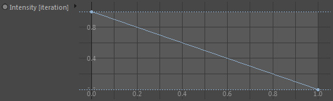

Parameters
Parameters
Channel
The Grid channel to diffuse.
Mode
Defines the type of blurring.
Kernel
Uses a falloff kernel to diffuse cells. This mode allows to sample
cells also further away. The Diffusion setting determines the radius.
Nearest Neighbor
Diffuses a grid cell only by neighbor cell values. The diffusion setting
has therefore only limited range.
Use more iterations for stronger diffusion in this mode.
Diffusion
The amount of diffusion (or length of the kernel) given in voxel size. Be careful with high values. Higher values take longer to calculate.
Iterations
The diffusion process can be looped by setting a higher iteration count. Takes linearly more time per iteration.
Intensity [iteration]

Defines the diffusion intensity per iteration. You can use the spline graph to control the intensity.
Example:
If you have 3 iterations, then..
- the leftmost point of the spline graph's x-axis defines the value for the 1st iteration.
- the center defines the value for the 2nd iteration
- the rightmost point defines the value the 3rd iteration
If you have 3 iterations, then..
- the leftmost point of the spline graph's x-axis defines the value for the 1st iteration.
- the center defines the value for the 2nd iteration
- the rightmost point defines the value the 3rd iteration